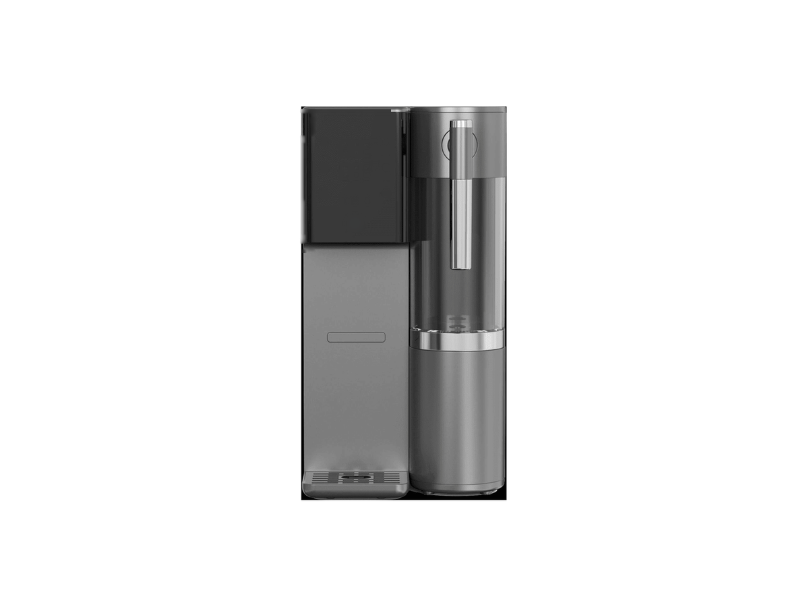

卓上型
卓上型RP-C07
加熱ジャグ付きRO浄水器
SKU: RP-C07
MOQ：お問い合わせ時に確認

卓上型システム
瞬間加熱RO — 3バリアント。RP-C01（AM910R、加熱ジャグ）がシリーズを牽引。
RP-C01とRP-C02は同じ瞬間加熱ROの2つの構成で、以下の仕様値を共有しています。異なるのは右側モジュールのみです。RP-C01は円筒形の加熱ジャグ、RP-C02は15 °Cの冷水を追加する背の高い透明な電子冷却タンクで、40 mm幅広（380 × 210 × 390 mm）です。3つ目のコンパクトな純温水バリアントも同じファミリーに属し、タンクが小型（4.5 / 1 L）で本体が細身（340 × 170 × 385 mm）です。詳細な仕様は下記のバリアント比較をご覧ください。仕様はモデルと注文ごとに確認します。
電圧／周波数は対象国に合わせて設定可能です。その他の構成は注文ごとに確認します。
RP-C01は瞬間加熱RO浄水器で、同じRO仕様を共有する3つのバリアントがあります。加熱ジャグモデル、電子冷却モデル、コンパクトな純温水モデルです。3つとも75 / 100 GPDで、浄水流量≥0.19 / 0.26 L/min、加熱ジャグと電子冷却バリアントの定格浄水量は4000 Lです。違いは右側モジュールです。円筒形の加熱ジャグ、15 °Cの冷水を追加する背の高い透明な電子冷却タンク、または純温水専用の細身のコンパクトボディです。
最小注文数量はいくつですか？
初回注文はモデルあたり200台、再注文は500台です。
大口注文の前にサンプルを注文できますか？
はい。サンプルは15日でご用意できます。サンプル費用は初回大口注文時に返金されます。大口注文はサンプル承認後40日で出荷し、FOB深圳条件となります。
どのバリアントを選ぶべきですか？
RP-C01として見積もり、バリアントを指定：加熱ジャグ、電子冷却、またはコンパクト温水専用。加熱ジャグと電子冷却バリアントは同じ仕様値を共有し、右側モジュールのみ異なります。
3バリアント — RP-C01として見積もり、バリアントを指定（加熱ジャグ、電子冷却、またはコンパクト温水専用）。
バリアント画像にホバーすると仕様が表示されます。タッチ画面では画像をタップしてください。


各バリアントの全仕様を並べて表示。下の仕様表にRP-C01の値を示す。
| 仕様 | RP-C01-1 — 加熱ジャグ（AM910R） | RP-C01-2 — 電子冷却（AM915R） | RP-C01-3 — コンパクト純温水バリアント（AM604R） |
|---|---|---|---|
| RO容量 | 75 / 100 GPD; ≥0.19 / 0.26 L/min | 75 / 100 GPD | 75 / 100 GPD; ≥0.19 / 0.26 L/min |
| 原水／純水タンク | 5.5 / 1.2 L | 5.5 / 1.2 L | 4.5 / 1 L |
| ろ過 | ミネラル段付き5-in-1 RO | ミネラル段付き5-in-1 RO | 5-in-1複合フィルター |
| 定格浄水量 | 4000 L | 4000 L | ご注文ごとに確認済みです |
| 寸法 | 340 × 210 × 390 mm | 380 × 210 × 390 mm | 340 × 170 × 385 mm |
| 温度 | 25 / 45 / 65 / 85 / 100°C | 15 / 25 / 45 / 65 / 85 / 100°C | 25 / 45 / 65 / 85 / 100°C |
| 容量 | 150／300／500 mL／連続出水 | 150／300／500 mL／連続出水 | 150 / 300 / 500 mL / 無制限 |
| 電圧／周波数 | 対象国に合わせて設定可能 | 対象国に合わせて設定可能 | 220V / 50Hz |
ROPureOEMカタログの仕様 9 行。
| RO容量／生産量 | 75 / 100 GPD; ≥0.19 / 0.26 L/min |
|---|---|
| 原水／純水タンク | 5.5 / 1.2 L |
| ろ過 | ミネラル段付き5-in-1 RO |
| 定格浄水量 | 4000 L |
| 寸法 | 340 × 210 × 390 mm |
| 温度 | 25 / 45 / 65 / 85 / 100°C |
| 容量 | 150／300／500 mL／連続出水 |
| 電圧／周波数 | 対象国に合わせて設定可能 |
| その他の構成 | ご注文ごとに確認済みです |
仕様はROPureOEMカタログに基づいています。値がまだ確認されていない場合は「注文ごとに確認」と記載しています。未確認の数値は公表しません。